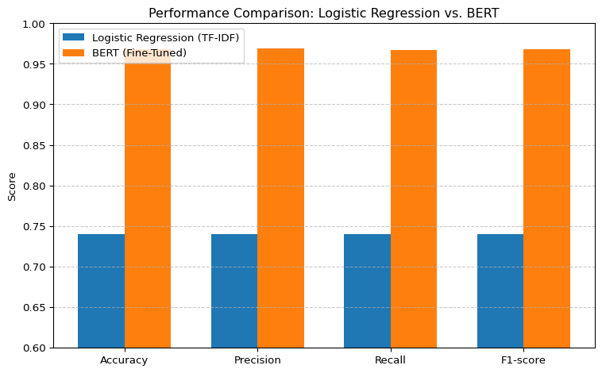

4Fine-tuned BERT Model for Sentiment Classification
4.1 Objective
In this section, we fine-tune a BERT model for entity-level sentiment classification on tweets.
BERT (Bidirectional Encoder Representations from Transformers) is a pre-trained transformer-based language model that captures contextual information from both directions (left and right). It has been widely adopted in various NLP tasks due to its deep understanding of sentence semantics. BERT (Bidirectional Encoder Representations from Transformers)[Devlin et al., 2018] is a pre-trained transformer-based language model that captures contextual information from both directions (left and right). It has been widely adopted in various NLP tasks due to its deep understanding of sentence semantics.
During fine-tuning, we adapt the pre-trained BERT model to our specific classification task by adding a classification head on top of the [CLS] token representation. The entire model is then trained end-to-end using our labeled dataset. The softmax output layer is trained to predict one of the sentiment classes.
Given the final hidden vector of the [CLS] token \(\mathbf{h}_{\text{[CLS]}}\), the probability of \(class( k )\) is computed as:
This model serves as our primary benchmark for comparison with the logistic regression baseline and for subsequent interpretability analysis using LIME.
4.2 Load Dataset and Preprocess
In this section, we load the training and validation datasets, remove empty tweets, and map sentiment labels to integers: Positive → 0, Neutral → 1, Negative → 2, Irrelevant → 3. This prepares the data for model training.
We use Hugging Face’s AutoTokenizer to tokenize tweets into model-ready inputs, including input_ids and attention_mask. The dataset is split and preprocessed in batches using the datasets library.
We load a pretrained bert-base-uncased model with a classification head (AutoModelForSequenceClassification) to perform four-class sentiment prediction. The model is moved to GPU or CPU depending on availability.
Some weights of BertForSequenceClassification were not initialized from the model checkpoint at bert-base-uncased and are newly initialized: ['classifier.bias', 'classifier.weight']
You should probably TRAIN this model on a down-stream task to be able to use it for predictions and inference.
The model is fine-tuned using Hugging Face’s Trainer API, which simplifies training and evaluation by managing data loading, loss computation, gradient updates, and metric reporting.
C:\Users\16925\AppData\Local\Temp\ipykernel_34876\3269255061.py:35: FutureWarning:
`tokenizer` is deprecated and will be removed in version 5.0.0 for `Trainer.__init__`. Use `processing_class` instead.
4.6 Save Model
Code
#trainer.evaluate()# Save model and tokenizer#trainer.save_pretrained("scripts/bert_model4") #tokenizer.save_pretrained("scripts/bert_model4")
C:\Users\16925\AppData\Local\Temp\ipykernel_34876\1614260637.py:10: FutureWarning:
`tokenizer` is deprecated and will be removed in version 5.0.0 for `Trainer.__init__`. Use `processing_class` instead.
Here is the evaluation result for the fine-tuned BERT model:
Metric
Value
Evaluation Loss
0.1038
Accuracy
0.9683
Precision
0.9609
Recall
0.9697
F1-score
0.9679
Evaluation Runtime (s)
19.2541
Samples/sec
766.85
Steps/sec
47.94
Here is a comparison of the BERT model vs. the Logistic Regression (TF-IDF) baseline model
Code
import matplotlib.pyplot as plt# Metrics and valuesmetrics = ["Accuracy", "Precision", "Recall", "F1-score"]logreg_scores = [0.74, 0.74, 0.74, 0.74]bert_scores = [0.968, 0.969, 0.967, 0.968]x =range(len(metrics))bar_width =0.35# Plotplt.figure(figsize=(8, 5))plt.bar([i - bar_width/2for i in x], logreg_scores, width=bar_width, label="Logistic Regression (TF-IDF)")plt.bar([i + bar_width/2for i in x], bert_scores, width=bar_width, label="BERT (Fine-Tuned)")plt.xticks(x, metrics)plt.ylabel("Score")plt.ylim(0.6, 1.0)plt.title("Performance Comparison: Logistic Regression vs. BERT")plt.legend()plt.grid(axis='y', linestyle='--', alpha=0.7)plt.tight_layout()plt.show()

Key Findings:
Significant Accuracy Gain: BERT achieves a ~23% improvement in accuracy compared to the baseline model (TF-IDF + Logistic Regression), indicating stronger predictive capability and better overall performance.
Balanced Precision and Recall: The BERT model maintains both high precision and recall, which suggests that it not only avoids false positives but also successfully identifies relevant instances. This balance is crucial for robust sentiment classification on noisy social media data.
Superior F1-Score: The improvement in F1-score reflects BERT’s ability to generalize across diverse sentiment classes. It achieves a better trade-off between precision and recall, minimizing both false positives and false negatives.